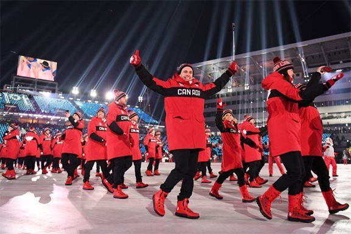

Introduction
Canada at the Olympic Winter Games:
A Simple Analysis of Why Canada is the BEST Team at the Olympics
Over the years, Canada has proven itself to be a very strong competitor in the Winter Olympic Games year after year. One may even say Canada is the best country at the Winter Olympics! As a Canadian myself, I may be a little biased, but when you take a look at the numbers you may find yourself agreeing with this opionion, if you don't already! To prove this opinion, we will take a look at various graphs depicting Olympic data. Please take note that the data used and analyzed below was the Olympic sports and medals data provided for 45 countries competing between 1924 and 2014 by the IOC Research and Reference Service and published by The Guardian's Datablog. Let's jump right in and take a look at some reasons why Team Canada is the BEST...
 AFP/GETTY IMAGES"Team Canada at the opening ceremony of the Pyeongchang 2018 Winter Olympic Games."
First Reason
#1. FIRST OF ALL, Canada Has A LOT of Medals
Here we can look at the top 10 countries in the Winter Olympics, i.e. the countries with the highest medal counts between 1924 and 2014. According to the data, these countries include Austria (AUT), Canada (CAN), Finland (FIN), Germany (GER), Norway (NOR), Russia (RUS), Soviet Union (URS), Sweden (SWE), Switzerland (SUI) and United States of America (USA). Looking at the graph below, two countries take a significant lead in total medal count - the United States with 653 medals, and not far behind, Canada with 623 medals.

But let's break it down even further. This graph below shows the same 10 countries, but shows only the number of gold medals each country has won. So even though Canada may not have the MOST medals overall, they take the lead in medal value winning the most GOLD medals of any other country.

Second Reason
#2. Canadian Athletes ROCK!
Both men and women athletes play a significant part in adding to Canada's medal count. The graph below displays the medal counts and breakdown of medals won for both men and women Canadian athletes. We can see here that for BOTH men and women, more GOLD medals have been won than silver or bronze.

Zooming out on that point, we can compare Canadian male and female athletes to male and female athletes from other countries. The graph below shows the number of medals won based on gender for the top 10 countries we looked at earlier. A gender gap is still very evident in more countries. However, it's exciting to see that not only Canada's men are up near the top in number of medals won, but also Canada's WOMEN as one of the highest earners of winter Olympic medals.

Third Reason
#3. Canada CRUSHES In These 2 Sports...
Canada is an extremely strong team when it comes to hockey. The graph below shows all the countries that have won medals in hockey. We can see from this that it is CLEAR Canada takes the victory in Olympic hockey, with 376 medals - 221 of them being gold!

Another one of Canada's strong sports is skating. Below this graph lays out the medal count of the top 10 countries that have won the most medals in skating. As we can see in the graph below, the United States takes the most medals, but Canada hits a close second in the medals they have won for skating.

Conclusion
Final Thoughts
Considering the points made above and the graphs we looked at, I think it's safe to say that Canada is undoutedly one of the strongest competitors in the games. And, in fact, yes, Canada is the BEST team at the Winter Olympics. Be sure to look out for Team Canada at the next Winter Olympics!